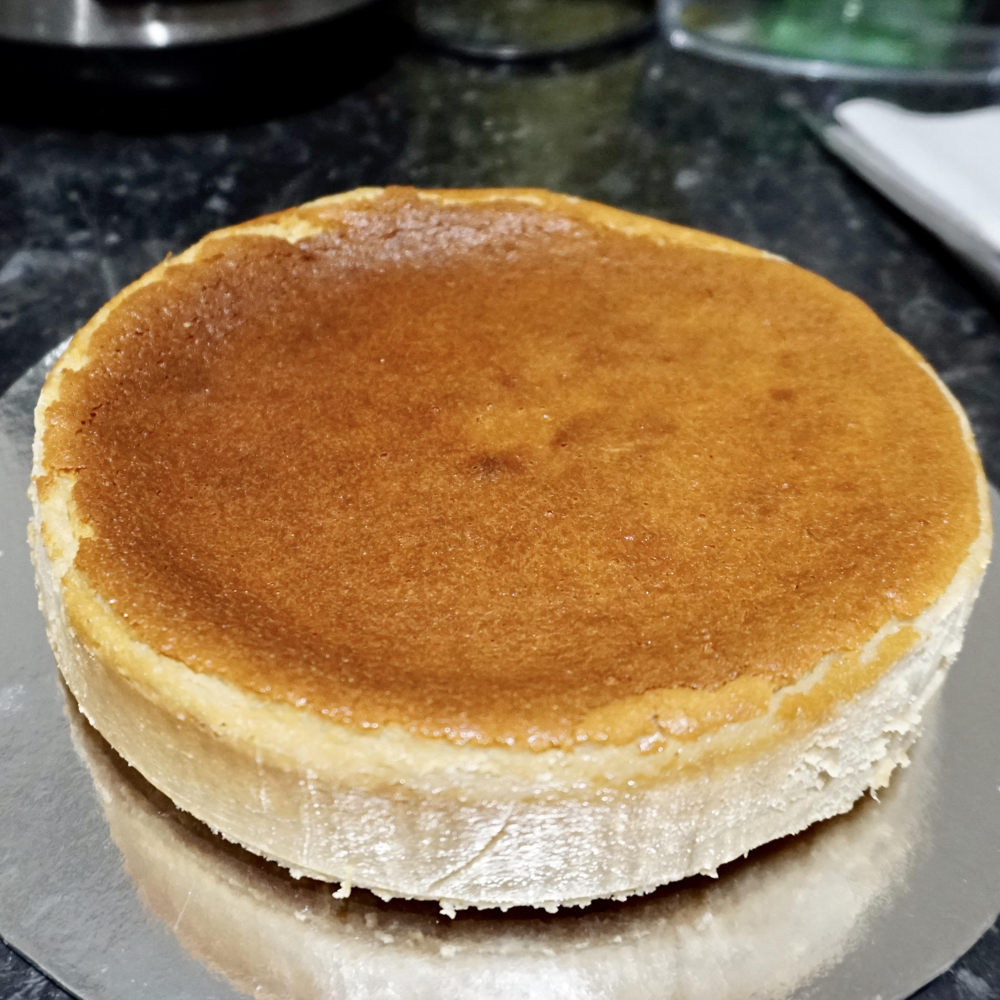

HOME ABOUT BLOG PORTFOLIO CONTACT

It was my boyfriend's birthday recently and, instead of baking a regular birthday cake, I decided that it would be a touch more special to try making a dairy free baked cheesecake instead!
It's absolutely heavenly; rich, creamy, and genuinely one of the best cheesecakes I've ever eaten in my life, despite having no real cheese in it! Unfortunately for those of you with nut allergies, this is not the recipe for you. In future I will try to make another iteration of the recipe that does not include cashews.

It has been a decidedly cool and rainy June so far and, thanks to the many grey days that require a little bit of extra comfort, this rich, velvety oat milk cappuccino has become a breakfast staple.
All you'll need to froth the oat milk is a cafetière. While I used to manage just fine using one cafetière for both the coffee and milk— through performing a cumbersome dance of plunge, pour, wash, repeat, all while hoping my coffee doesn't get too cold— I would highly recommend investing in a second cafetière if it becomes your preferred method for frothing milk.